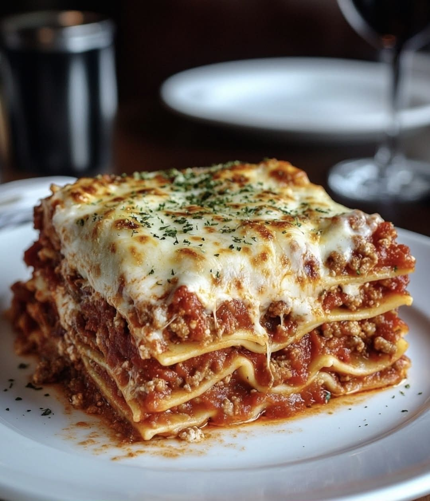

Recipes lasagna
Recipes-Odin
Description
Is a classic lasagna recipe in English. I’ve selected a version with meat sauce (ragù) and bechamel sauce — this is a foundation that works well.

Ingredientss
- 1 box of lasagna noodles
- 2 jars of tomato sauce
- 1 pound of lean ground beef or Italian sausage, browned
- ½ cup of white wine
- 1 container of ricotta cheese
- 4 cups of shredded mozzarella, divided
- ½ cup of grated Parmigiano-Reggiano
- salt and black pepper to taste
Method
- Step 1: Prepare the meat sauce.Heat olive oil in a large skillet. Brown the meat until cooked through, then season with salt and pepper. If you’re using wine, add it now and simmer until the liquid has reduced by half. Set aside
- Step 2: Mix the cheeses. In a bowl, combine the ricotta cheese, 2 cups of mozzarella, and the grated Parmigiano-Reggiano. Stir well.
- Step 3: Preheat the oven.Set the oven to 375°F (190°C).
- Step 4: Assemble the layers.Spray a 13 x 9 inch baking dish with non-stick cooking spray. Pour one cup of tomato sauce on the bottom and spread evenly. Place 3 sheets of lasagna noodles side by side (they will expand during baking). Pour another cup of sauce and ¾ cup of the cheese mixture over the first layer. Top with ¼ cup of mozzarella and ⅓ cup of the cooked meat. Repeat this layering three more times.
- Step 5: Finish the lasagna. For the final layer, top with 3 more sheets of noodles, add the remaining sauce, and finish with the cheese mixture and mozzarella.
- Step 6: Bake.Cover the dish with foil and bake for 25 minutes. Then remove the foil and bake for another 5 minutes to brown the cheese. Let the lasagna rest for 15 minutes before serving.